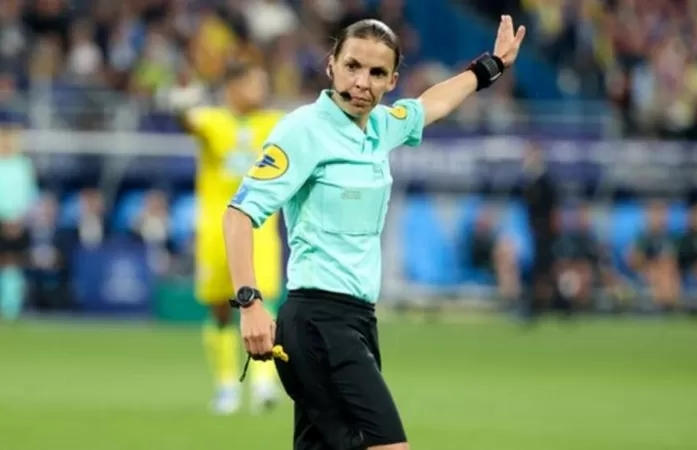

በኳታሩ የዓለም ዋንጫ ሴት ዳኞች ለመጀመሪያ ጊዜ ውድድሮችን ሊመሩ ነው
21 ሚያዝያ 2022

በኳታሩ የዓለም ዋንጫ በውድድሩ ታሪክ ለመጀመሪያ ጊዜ ሴት ዳኞች ጨዋታዎችን እንደሚዳኙ ተገለጸ። ከዚህ በተጨማሪ ዳኞቹ በሶስት ሴት ረዳት ዳኞች የሚታገዙ ይሆናል።
የፈረንሳዩዋ ስቴፋኒ ፍራፖርት፣ ሩዋንዳዊቷ ሳሊማ ሙካንሳንጋ እና የጃፓኗ ዮሺሚ ያማሺታ በኳታሩ የዓለም ዋንጫ ላይ የእግር ኳስ ጨዋታዎችን የሚዳኙ ይሆናል።
የኳታሩ የዓለም ዋንጫ ሕዳር 12/2015 ዓ.ም. ሰኞ ዕለት ይጀምራል።
በአጠቃላይ በኳታሩ የዓለም ዋንጫ 36 ዳኞች የተመረጡ ሲሆን 69 ረዳት ዳኞች እንዲሁም 24 የቪዲዮ ደጋፊ ባለሙያዎች ውድድሩን በንቃት እንደሚከታሉ ተገልጿል።
ከወንዶች ዳኞች መካከል በእንግሊዝ ፕሪምየር ሊግ በዳኝነት የሚታወቁት ማይክል ኦሊቨር እና አንቶኒ ቴይለር በውድድሩ ጨዋታዎችን ከሚዳኙት መካከል ይገኙበታል።
''እንደተለመደው በዋነኛነት ከግምት ውስጥ የምናስገባው መመዘኛ ጥራት የሚለው ነው። ዳኞቹ የተመረጡት በዓለም እግር ኳስ ከፍተኛውን ደረጃ ጠብቀው ጨዋታዎችን መምራት የሚችሉበት ሁኔታ ታይቶ ነው'' ብለዋል የዓለም አቀፉ የእግር ኳስ ማህበር ፊፋ የዳኛዎች ኮሚቴ ዋና ጸሀፊ የሆኑት ፔርሉጊ ኮሊና።
''ሴት ዳኞቹ የተመረጡት ከ7 ዓመታት በፊት በተጀመረው ሂደት መሠረት ሲሆን ዳኞቹ በፊፋ የታዳጊዎችና ሌሎች ከፍተኛ ውድድሮች ላይ እንዲመከሩ ተደርገዋል። በዚህ መንገድ ከጾታዊ ምልከታ ይልቅ ጥራት ላይ አተኩረን ዳኞችን እንድንመርጥ አስችሎናል'' ብለዋል።
አክለውም ''ወደፊት በትልልቅ ዓለም አቀፍና አህጉራዊ ውድድሮች ላይ ሴት ዳኞችን መምረጥ እንደዚህ የሚወራለት ነገር ሳይሆን የተለመደ አሰራር እንደሚሆን ተስፋ አደርጋለው'' ብለዋል።